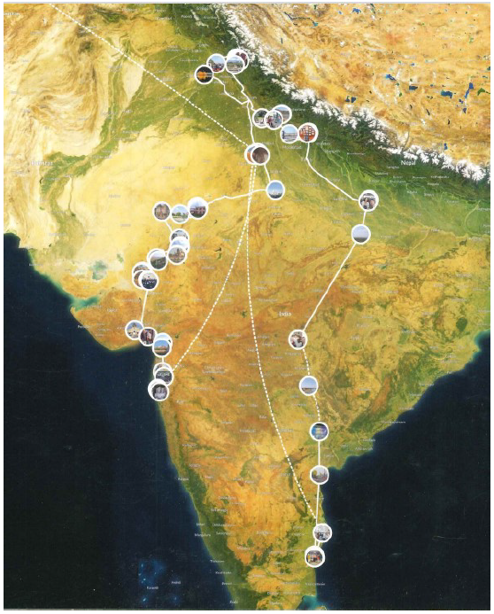

HKC Expedition 2:
A Journey of Discovery
Salient Features
- Country: India
- Date: February 21, 2024 - March 21, 2024
- Route: Mumbai – Himalayas ( Dharmshala) - Pondicherry
- Category : Case Study and Pilot Project
- Visited: 25 destinations x 30 days x 7,200KM
- First land based HKC Expedition
Concept
Interaction with heads of administration / organizations / institutes such as Universities – Hospitals – Spiritual centres ( like Ashrams ), to appreciate the wonderful job they are doing, to understand knowledge, thoughts, ideas on relevant HKC themes that fall under their purview, for possible tie ups at various levels
- To visit different geographical regions in rural areas and observe the civilization – culture – regional diversities & traditions – languages – behaviour - food
- To observe – explore – participate areas of HKC Themes and what we can do in those regions in a planned manner specific to the areas of those Themes. How we can help the living beings which is actually the ultimate essence of the expedition to be achieved.
- Observations during the travel and through inclusive interactions at places of different beliefs and faith to observe and understand diversity – cultures – traditions
Objectives
- To empower participants—helping them evolve physically, mentally, and spiritually while nurturing personal growth and skill development through hands-on experience.
- To giving back to society on a global scale, through an organized, structured, and selfsustainable enduring platform within the ambit of HKC themes.
- This expedition was primarily focused on themes (Code – K08, C09,C10) : Ancient Civilization, Culture, Art & Museum, Tribal Classical Dance, Music, Science & Technology, University & Research Institute, NGOs
Team
- Francois Jerome Bernard (France)
- Ruze Hautin (France)
- Cheneviere Morin (France)
- Mariyam Marie Pascle (France)
- Vikram Naik (India)
- Prasad Rane (India)
- Sunil Mohite (India)
- Sarvesh Kumar (India)
- Truck Driver (India)
General Information
- 5 French and 5 Indians were participated in this expedition
- Food was cooked & eaten enroute or wherever conditions supported. Overnight stay was mostly in Hotels or Ashrams
- Nobody fell sick throughout. Trip was great success. Each & every person was satisfied.
- The team could meet spiritual leaders of prominent Ashrams in Rhishikesh and other places, head of academic (vice Chancellor) of University and also visit charitable organisations, Mid day meals, tribal centres and revered places of different faiths.
Route & Places visited :

Mumbai – Elephanta Caves- Billimora- Palitana- Ahemdabad- Patan-
Udaipur- Jodpur- Ajmer- Delhi- Amritsar- Dhramashala- Chandigarh-
Rishikesh- Nainital- Ayodhya- Telangana- Pondicherry
Tie ups/MOU established during Expeditions
Team had meaningful discussions for tie ups with institutes,
universities, spiritual leader. This discussion are to be taken up
in this year 2025 to next level.
Impact and Awareness
- Transfer of knowledge & experiences at local levels visited
- Transfer of knowledge and cultural awareness to visiting team from France
- Researched and explored possibility of HKC themes (Climate change, green energy, organic food)
Essence
- Vice Chancellor – Dy Director – Trustee of 3 different universities and Head of a reputed Hospital – all from different geographical regions were interacted with and had healthy relevant discussions.
- Great number of spiritual places – several different religious places of worships for different religions – academic centres – hospitals – spiritual centres – tribal schools – villages were visited and extensively interacted with.
- Except for giving formal lectures in the university and brain-storming with senior people , there was nothing we did which could cause Awareness or Impact which could help people. This however is the ground level essence of the Project.
Photo Gallery